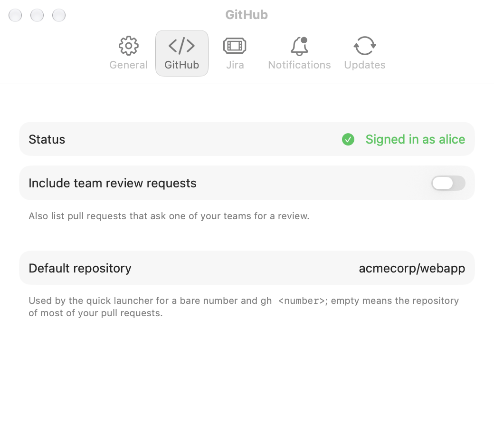
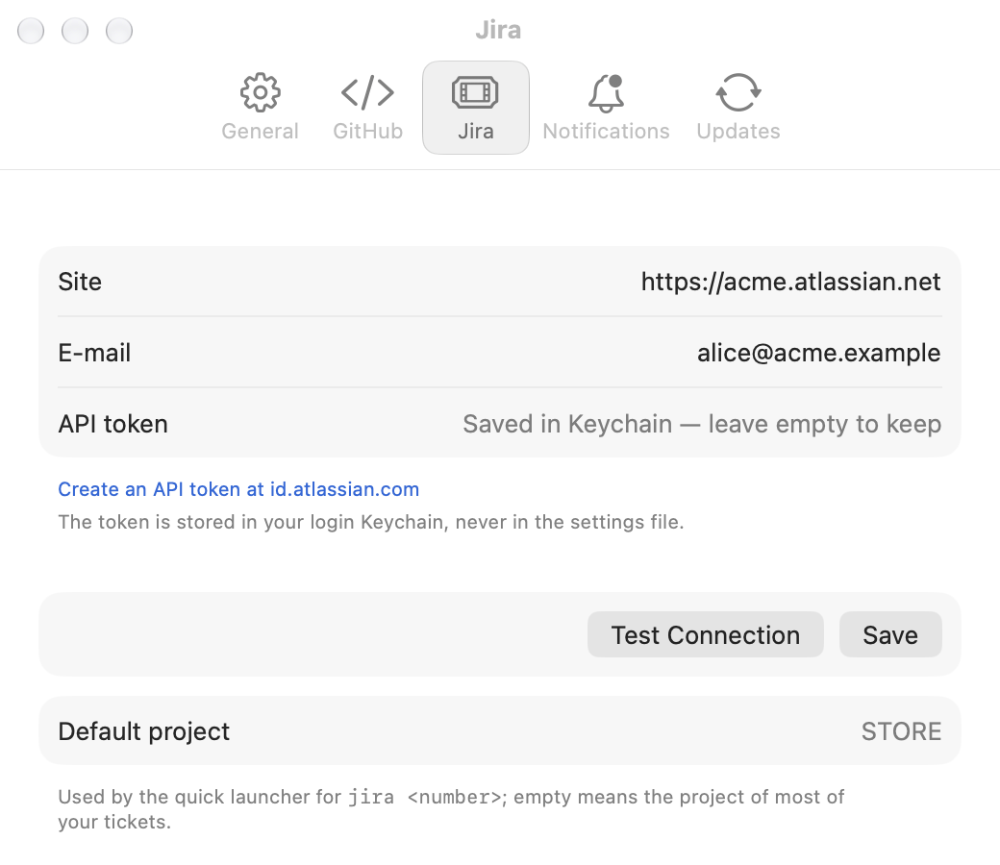
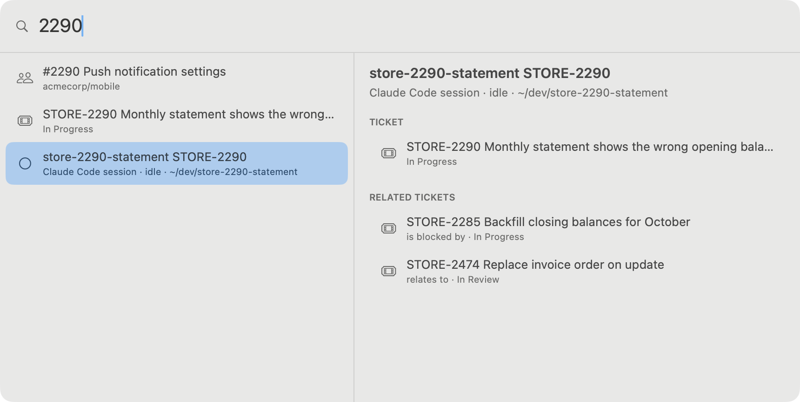
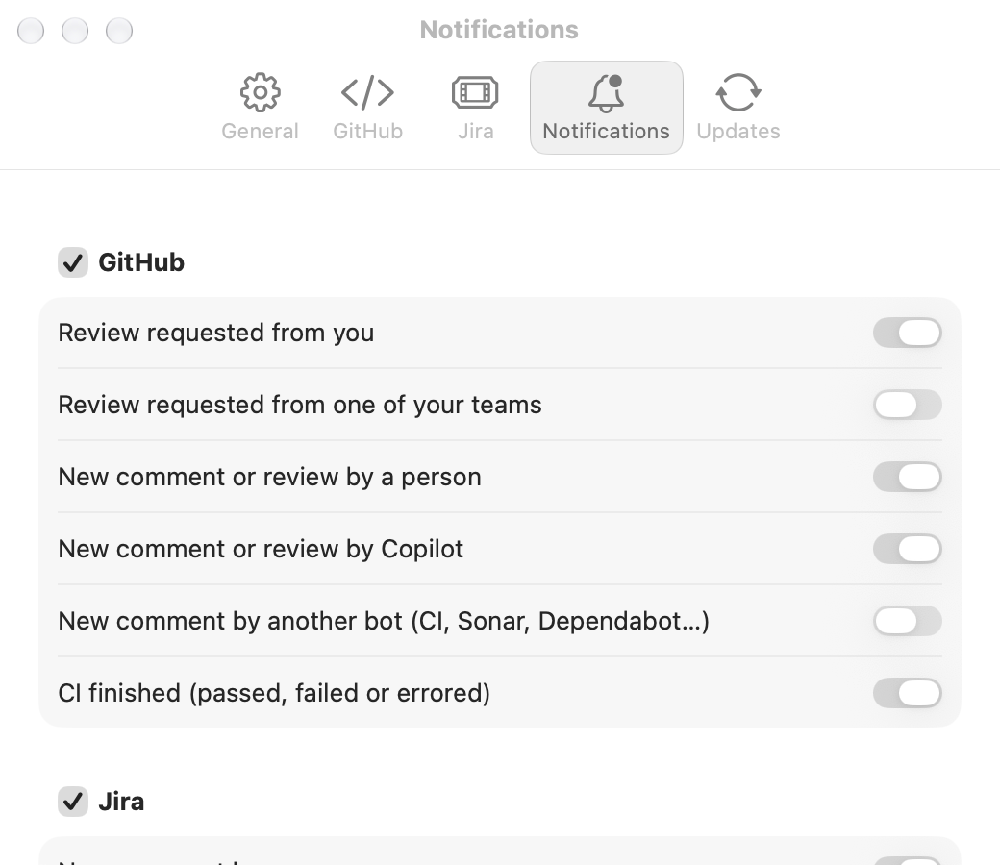
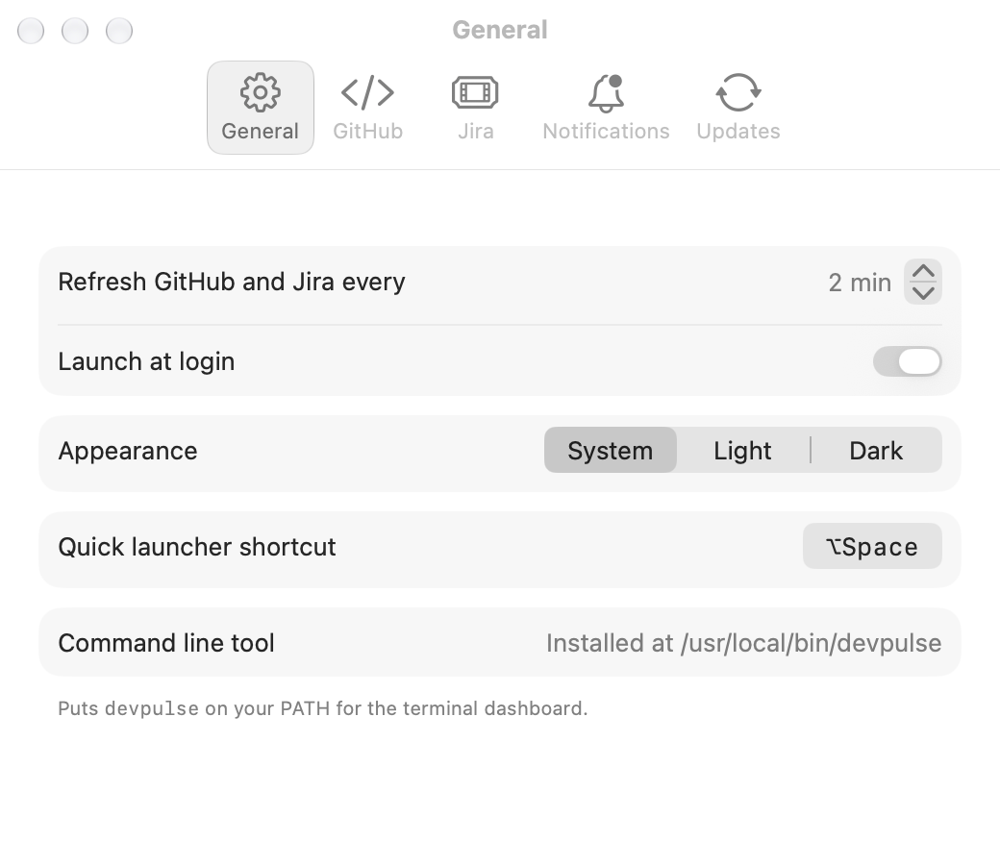

Začínáme
DevPulse drží na jednom místě vaše pull requesty na GitHubu, tikety v Jiře a běžící sessions Claude Code: v okénku v menu baru a v živém přehledu v terminálu. Potřebuje macOS 27 nebo novější.
- Stáhněte obraz disku ze stránky ke stažení a otevřete ho.
- Přetáhněte DevPulse do složky Aplikace a spusťte ji odtamtud.
DevPulse bydlí v menu baru a v Docku ikonu nemá. Když poprvé poběží ze složky Aplikace, udělá dvě věci:
- Zapne Launch at login, takže se spustí po každém přihlášení. Vypnout to jde v obecných nastaveních.
- Zeptá se Install the command line tool?
Tlačítkem Install získáte příkaz
devpulse, tlačítkem Not Now to odložíte; víc v další kapitole.
macOS se také zeptá, jestli smí DevPulse posílat notifikace. Pokud je chcete, povolte to; co všechno vám DevPulse umí oznámit, najdete v kapitole Notifikace.
Nástroj pro příkazovou řádku
Přehled v terminálu i devpulse upgrade obstarává příkaz
devpulse. Je přibalený uvnitř aplikace; abyste ho mohli
psát v terminálu, musí být v PATH:
- Otevřete Settings… › General.
- U položky Command line tool klikněte na Install a zadejte heslo, až si o něj macOS řekne.
Vznikne odkaz /usr/local/bin/devpulse na nástroj uvnitř
aplikace (a chybí-li, i samotná složka). Protože jde o odkaz, každá
aktualizace aplikace zaktualizuje i příkaz. Potom řádek ukazuje
Installed at /usr/local/bin/devpulse. Pokud na
té cestě už něco jiného je nebo odkaz vede na kopii DevPulse, která už
neexistuje, řádek vypíše cíl a nabídne Replace.
Tlačítko je neaktivní, dokud DevPulse neběží ze složky /Applications nebo ~/Applications, třeba když ho spouštíte rovnou z obrazu disku nebo ze Stažených souborů. Hláška vysvětluje proč: Move DevPulse to the Applications folder first — the command line tool would otherwise point at a location that can disappear. Odkaz by jinak vedl na místo, které může zmizet. Přesuňte aplikaci, spusťte ji znovu a nainstalujte. Kopie, ve které nástroj chybí, hlásí The command line tool is missing from this copy of DevPulse.; stáhněte aplikaci znovu.
devpulse --version vypíše verzi příkazu.
Připojení GitHubu
DevPulse používá přihlášení nástroje GitHub CLI, takže žádný token nikam nevkládáte. V terminálu:
brew install gh
gh auth loginDevPulse si token od gh vyžádá jednou, při startu,
a drží ho jen v paměti; znovu se ptá, jen když ho GitHub odmítne. Záložka Settings… › GitHub má
tyto prvky:

1 2 3gh přihlášené.- 1Status
- Když poslední načtení vyšlo, Signed in as … s vaším loginem; jinak popis problému, například Not logged in — run “gh auth login” nebo GitHub CLI (gh) not found — install it with Homebrew.
- Check Again
- Ukáže se, dokud GitHub není připojený. Po
gh auth loginna něj klikněte a data se načtou hned. - 2Include team review requests
- Ve výchozím stavu vypnuto. Zapnuté přidá do Review requests i pull requesty, které o review žádají některý z vašich týmů, ne jen vás.
- 3Default repository
owner/name, které rychlé hledání použije progh <číslo>a samotné číslo, když číslo nepatří žádnému z vašich známých pull requestů. Prázdné pole znamená repozitář, ve kterém máte nejvíc pull requestů; pole ho ukazuje šedě.
Připojení Jiry
Otevřené tikety z Jira Cloud čte DevPulse pomocí API tokenu.

1 2 3 4 5- Vytvořte token na id.atlassian.com › Security › API tokens (stejnou stránku otevře odkaz 2Create an API token at id.atlassian.com v nastavení) a zkopírujte ho.
- Otevřete Settings… › Jira.
- 1Vyplňte Site (třeba
acme.atlassian.net), E-mail (váš účet Atlassian) a API token. DevPulse se k webu vždy připojuje přes HTTPS, i když zadátehttp://. - 3Klikněte na Test Connection. Odpoví Connected — 5 open tickets, nebo řekne, co je špatně, například Jira credentials rejected.
- 4Klikněte na Save.
Token se ukládá do vaší přihlašovací Klíčenky, nikdy do souboru s nastavením. Po uložení pole tokenu ukazuje Saved in Keychain — leave empty to keep: když měníte Site nebo e-mail, nechte ho prázdné a token zůstane, nebo vložte nový a nahradíte ho.
- 5Default project
- Klíč projektu, který rychlé hledání doplní
před
jira <číslo>a samotné číslo. Prázdné pole znamená projekt, ve kterém máte nejvíc tiketů; pole ho ukazuje šedě.
DevPulse ukazuje tikety, které máte přiřazené a které ještě nejsou hotové.
Menu bar
Ikona DevPulse je ciferník sonaru: kroužek s tečkou a krátkou čárkou. Kliknutím na ni otevřete okénko.
 1
2
3
4
5
6
7
8
1
2
3
4
5
6
7
8
- 1Obnovit
- Načte GitHub a Jiru hned teď. Během načítání se točí kolečko. DevPulse data načítá i sám, ve výchozím nastavení každé 2 minuty.
- 2Stav zdroje
- Kdy se data části načetla (1 min ago), nebo co se pokazilo, i se stářím dat, která zůstávají vidět (Offline · data from 20 min ago). Prázdná část Jira, která ještě není nastavená, ukazuje odkaz Set up in Settings… na záložku Jira.
- 3Pull request
- Ikona ukazuje stav CI: zelená fajfka znamená, že CI prošlo, červený křížek, že selhalo, žluté hodiny, že ještě běží, a prázdné kolečko, že pull request žádné kontroly nemá. Pod názvem je repozitář s číslem, navázaný klíč z Jiry, stav review (approved, changes requested) a komentáře. Kliknutím otevřete pull request na GitHubu.
- 4Žádost o review
- Jedna postava: review chtějí po vás. Dvě postavy: po některém z vašich týmů (jen se zapnutým Include team review requests). Kliknutím otevřete pull request.
- 5Tiket z Jiry
- Klíč, název a stav. Kliknutím otevřete tiket v Jiře.
- 6Session Claude Code
- Ikona ukazuje stav: oranžová tečka znamená, že session čeká na váš vstup, modré půlkolečko, že pracuje, a prázdné kolečko, že nic nedělá. Vedle jména je klíč z Jiry nalezený v názvu složky, pod ním stav a složka. Kliknutím přenesete okno Ghostty s touto session dopředu. Poprvé se macOS zeptá, jestli smí DevPulse ovládat Ghostty; bez toho svolení DevPulse Ghostty jen aktivuje.
- 7Settings…
- Otevře okno s nastavením.
- 8Quit DevPulse
- Ukončí aplikaci. Notifikace, rychlé hledání i přehled v terminálu stojí, dokud ji znovu nespustíte.
Klíč z Jiry v názvu nebo větvi pull requestu ho s tiketem propojí;
klíč v názvu složky session Claude Code udělá totéž pro session. Názvy
jako UTF-8 nebo SHA-256 se za klíče
nepovažují, a když je klíčů víc, vyhraje klíč projektu, ve kterém máte
tikety (nebo výchozího projektu). Když najedete
myší na řádek, uvidíte celý název nebo složku.
DevPulse ukazuje interaktivní sessions nativního příkazu
claude, tedy toho, který nainstaluje vlastní instalátor
Claude Code. Claude Code nainstalovaný přes npm běží jako proces
Node.js a DevPulse ho nenajde; stejně tak neinteraktivní běhy, třeba
ty z SDK.
Přehled v terminálu
Napište v terminálu devpulse a stejná data dostanete
jako živý přehled ovládaný klávesnicí, ve stylu lazygitu. Aktualizuje
se sám, jakmile má aplikace něco nového, takže ho můžete mít otevřený
celý den. Když aplikace neběží, devpulse ji spustí.
 1
2
3
4
5
6
7
8
9
1
2
3
4
5
6
7
8
9
devpulse v Ghostty. Barvy se řídí motivem
vašeho terminálu.- 1My pull requests
- Repozitář, číslo, stav CI (✓ prošlo, ✗ selhalo, … běží) a název.
- 2Review requests
- Pull requesty, které čekají na vaše review: ●, když review chtějí přímo po vás, tlumené ○, když po některém z vašich týmů.
- 3Jira
- Vaše otevřené tikety: klíč, stav a název.
- 4Claude Code
- Běžící sessions: ◐ busy, ● waiting for input, ○ idle, za → navázaný klíč z Jiry.
- 5Detail
- Všechno o vybrané položce. U pull requestu navázaný tiket a jeho stav (i když tiket není přiřazený vám), větev, kontroly, review, komentáře, jestli review chtějí po vás nebo po týmu, poslední změna, související tikety a tři nejnovější komentáře. U tiketu stav, priorita, komentáře, navázané pull requesty a sessions a související tikety. U session stav (a na co čeká), složka, klíč z Jiry a ID procesu. Spodní řádky říkají, které klávesy tu platí.
- 6Zdroje
- Každý zdroj se stavem a stářím dat: ✓ 2m, když je vše v pořádku, ✗ s chybou a stářím zobrazených dat, fetching, off nebo not set up.
- 7Lišta kláves
- Klávesy, které teď můžete stisknout; v úzkém okně se ty méně důležité vynechají.
- 8Pozice
- Vybraný řádek a délka seznamu v aktivním panelu.
- 9Related
- Vazby tiketu v Jiře, tady tiketu daného pull requestu; viz Související tikety níže.
Klávesy
| Klávesa | Akce |
|---|---|
| ↑ ↓ nebo j k | Posun výběru. |
| 1–4, Tab, Shift-Tab | Přepnutí panelu. |
| Enter | Otevřít: pull request nebo tiket v prohlížeči, session v jejím okně Ghostty. |
| J | Otevřít tiket z Jiry navázaný na vybraný pull request nebo session Claude Code. |
| / | Filtr. Enter ho ponechá, Esc ho zruší. |
| r | Načíst GitHub a Jiru hned teď; lišta kláves ukazuje refreshing…, dokud nepřijdou nová data. |
| , | Otevřít nastavení v aplikaci. |
| ? | Seznam všech kláves; zavře ho Esc, ?, q nebo kliknutí. |
| q, Ctrl-C | Konec. |
| Myš | Kliknutí vybere řádek (i jeho panel), kolečko posouvá panel pod ukazatelem. |
| Kliknutí, ⌘-kliknutí | Otevře podtržený odkaz pod ukazatelem v detailu v prohlížeči (viz Odkazy). |
Filtr. Stiskněte / a pište: všechny čtyři panely ukážou jen řádky, které text obsahují. Hledá se v názvu, repozitáři, větvi, klíči z Jiry a čísle pull requestu, v klíči, názvu a stavu tiketu a ve jméně, složce a klíči z Jiry u session. Počet v hlavičce panelu ukazuje, kolik řádků vyhovuje, třeba 2/4. Enter filtr ponechá a vrátí vás do seznamů, Esc ho zruší.
Související tikety. Když má tiket v Jiře vazby, detail ukáže oddíl Related s řádkem pro každou vazbu: jak spolu tikety souvisí, slovy Jiry (blocks, is blocked by, relates to), klíč, stav v jeho barvě a název. Pull request ukazuje související tikety svého tiketu, i když ten tiket není přiřazený vám. Bez vazeb se oddíl neukáže.
Odkazy. Odkazy v detailu jsou podtržené. Kliknutím otevřete v prohlížeči klíč z Jiry, větev, název pull requestu nebo řádek v oddílu Related: tiket v Jiře, větev na GitHubu (u pull requestu z forku ve forku) nebo pull request. Stejně funguje klíč a název tiketu a klíč z Jiry u session. Funguje i ⌘-kliknutí. Terminály s podporou odkazů, třeba Ghostty, otevřou odkaz i samy po ⇧⌘-kliknutí; to je záložní cesta terminálu, DevPulse k ní nepotřebuje.
Stavy a hlášky
- disconnected — reconnecting… červeně nahoře: aplikace skončila nebo se restartuje. Přehled si nechá poslední data a sám se znovu připojí, jakmile aplikace zase poběží.
- not connected — action not sent v liště kláves: stiskli jste klávesu, která potřebuje aplikaci, zatímco nebyla k dispozici.
- could not open link v liště kláves: po kliknutí na odkaz se nepodařilo spustit prohlížeč.
- refreshing… v liště kláves: stiskli jste r. Zmizí, jakmile přijdou nová data, nejpozději po 10 sekundách, nebo s další klávesou.
- Prázdný panel říká proč: Jira is not set up — press , for Settings, GitHub unavailable — see the header nebo při filtrování no match for “…”.
- Když v jiném terminálu běží
devpulse upgrade, vpravo nahoře je vidět jeho průběh, například downloading update 42%. Výsledek, up to date nebo update failed: …, tam zůstane asi 10 sekund.
Rychlé hledání
Stiskněte kdekoli ⌥Space a uprostřed obrazovky
se otevře vyhledávací panel. Napište číslo, které se pak hledá všude,
gh pro pull requesty nebo jira pro tikety;
zkratku změníte v
obecných nastaveních.
 1
2
1
2
gh.- 1Vyhledávací pole
- Sem napište dotaz podle tabulky níže. Dokud nic nenapíšete, ukazuje světle šedou nápovědu Number, gh … or jira ….
- 2Výsledky
- Nejvýš 20 řádků. Ikona říká, co řádek je: pull request (rozvětvená šipka), žádost o review (jedna nebo dvě postavy jako v okénku), tiket z Jiry, nebo session Claude Code (její stav jako v okénku). Pod názvem je repozitář, stav tiketu, stav a složka session nebo, u řádku, který otevře číslo či klíč, pro který žádnou položku nemáte, adresa, kterou otevře. Vybraný řádek je zvýrazněný.

store-2290-statement a nakonec řádek, který otevře 2290 ve výchozím repozitáři.| Napíšete | Výsledek |
|---|---|
2474 | Všechno s tímto číslem: vaše pull requesty a žádosti o review s číslem 2474 v libovolném repozitáři, za nimi vaše tikety s číslem 2474 v libovolném projektu (STORE-2474, WA-2474) a sessions Claude Code, jejichž klíč z Jiry nebo název složky toto číslo obsahuje (store-2474-fix, ale ne store-24740). Nakonec řádky, které otevřou 2474 ve výchozím repozitáři a STORE-2474 ve výchozím projektu, pokud už v seznamu nejsou. |
gh | Vaše pull requesty, za nimi žádosti o review. |
gh invoice | Ty, jejichž název nebo repozitář text obsahuje. |
gh 812 | Váš pull request nebo žádost o review s tímto číslem. Když takový nemáte, řádek, který otevře 812 ve výchozím repozitáři. |
gh webapp 455 | Pull request 455 v daném repozitáři: stačí název repozitáře, ve kterém máte pull requesty, nebo celé owner/name. |
jira | Vaše tikety. |
jira export | Ty, jejichž název nebo klíč text obsahuje. |
jira STORE-2290 | Tento tiket, i když ve vašem seznamu není. |
jira 2290 | Totéž s výchozím projektem na začátku: STORE-2290. |
| Klávesa | Akce |
|---|---|
| ↑ ↓ | Posun výběru. |
| Enter nebo kliknutí | Otevřít vybraný řádek: pull request nebo tiket v prohlížeči, u session Claude Code přenést dopředu její okno Ghostty. |
| ⌘Enter | Otevřít tiket z Jiry navázaný na vybraný pull request. |
| Esc | Zavřít panel. |
Notifikace
Když se stane něco nového, pošle DevPulse notifikaci macOS. Kliknutím na ni otevřete pull request nebo tiket, případně přenesete dopředu okno Ghostty se session Claude Code. Co chcete dostávat, nastavíte v Settings… › Notifications.

1 21Každý zdroj má hlavní vypínač v nadpisu své části (GitHub, Jira, Claude Code), ve výchozím stavu zapnutý. Jeho vypnutím zastavíte jen notifikace; data v okénku i v terminálu zůstanou. 2Pod ním má vlastní vypínač každý druh notifikace; tyto vypínače jsou zašedlé, dokud je hlavní vypínač jejich zdroje vypnutý:
| Vypínač | Výchozí | Notifikace |
|---|---|---|
| GitHub | ||
| Review requested from you | zapnuto | Review requested |
| Review requested from one of your teams | vypnuto | Review requested |
| New comment or review by a person | zapnuto | New comment on #812 |
| New comment or review by Copilot | zapnuto | New comment on #812 |
| New comment by another bot (CI, Sonar, Dependabot…) | vypnuto | New comment on #812 |
| CI finished (passed, failed or errored) | zapnuto | CI passed on #812, CI failed on #812, CI error on #812 |
| Jira | ||
| New comment by a person | zapnuto | New comment on STORE-2290 |
| New comment by Jira automation or an app | vypnuto | New comment on STORE-2290 |
| Claude Code | ||
| A session is waiting for your input | zapnuto | Claude is waiting |
| A session finished its work | zapnuto | Claude finished |
- Vypínače komentářů se týkají komentářů a review u vašich vlastních pull requestů a tiketů. Vaše vlastní komentáře notifikaci nikdy nespustí.
- Review requested from one of your teams funguje jen se zapnutým Include team review requests v záložce GitHub.
- CI finished přijde jednou za každý pushnutý commit a výsledek.
- Session Claude Code se ozve jednou, když začne čekat, a jednou, když přejde z práce do klidu.
- Hned po instalaci nebo po opětovném zapnutí zdroje si DevPulse jen poznamená, co už existuje; žádná záplava starých položek se nekoná. Co vám už oznámil, si pamatuje i po restartu.
Pokud má DevPulse notifikace v macOS vypnuté, záložka hlásí Notifications are turned off for DevPulse in System Settings. a tlačítko Open System Settings vás tam přenese.
Obecná nastavení
Settings… › General:

1 2 3 4- 1Refresh GitHub and Jira every
- 1 až 30 minut, výchozí jsou 2; nastavuje se šipkami. Když Mac spí nebo je zamčená obrazovka, načítání stojí a po probuzení či odemčení proběhne hned jednou. Sessions Claude Code se podle časovače nenačítají: DevPulse vidí jejich změny, jakmile nastanou.
- 2Launch at login
- Spustí DevPulse po přihlášení; ve výchozím stavu zapnuto. Pokud macOS chce vaše schválení, řádek vás pošle do System Settings › General › Login Items.
- 3Quick launcher shortcut
- Ukazuje aktuální zkratku, výchozí je ⌥Space. Klikněte na ni a stiskněte novou, nebo Esc pro zrušení. Zkratku bez ⌘, ⌥ nebo ⌃ odmítne (Use at least one of ⌘, ⌥ or ⌃), stejně jako ⌘Space a ⌥⌘Space, které patří Spotlightu; pak čeká na jinou zkratku. Když ji už používá jiná aplikace, ohlásí to červený řádek; zvolte jinou.
- 4Command line tool
- Install, Replace nebo cesta k nainstalovanému nástroji; viz Nástroj pro příkazovou řádku.
Záložky GitHub, Jira, Notifications a Updates popisují kapitoly Připojení GitHubu, Připojení Jiry, Notifikace a Aktualizace.
Aktualizace
Při každém spuštění se DevPulse podívá, jestli existuje novější verze, a pokud ano, nabídne ji v dialogu s poznámkami k verzi; bez vašeho souhlasu se nic nenainstaluje. Settings… › Updates nabízí:
- Check for updates automatically
- Ve výchozím stavu zapnuto. Vypnuté znamená, že se DevPulse při spuštění už neptá.
- Check Now
- Vedle nainstalované verze (DevPulse 0.9.0). Zeptá se hned a odpověď ukáže vždy, i když máte nejnovější verzi.
devpulse upgrade
Příkaz aktualizuje z terminálu bez jakéhokoli dialogu: zjistí, jestli je nová verze, stáhne ji, nainstaluje, restartuje aplikaci a vypisuje každý krok. Otevřený přehled v terminálu se znovu připojí sám.
$ devpulse upgrade
Checking for updates…
Downloading… 100%
Installing…
Restarting DevPulse…
Updated to v0.2.0| Poslední řádek | Návratový kód |
|---|---|
| Updated to v… | 0 |
| DevPulse is up to date (v…) | 0 |
| Warning: DevPulse did not come back within 30 s; open it to check that the update was installed. | 0 |
| Update failed: … s důvodem, na standardní chybový výstup | 1 |
| devpulse: cannot reach the DevPulse app (…). Is DevPulse installed? | 1 |
Špatný argument vypíše usage: devpulse [upgrade | --version]
a skončí s kódem 2. Když už je v aplikaci otevřený dialog s aktualizací,
devpulse upgrade ho nepřebírá: skončí hláškou
Update failed: An update is already in progress in
DevPulse. a dialog nechá na vás.